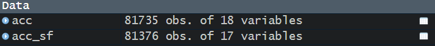
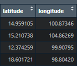
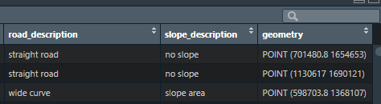
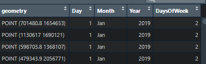

Show the code
pacman::p_load(leaflet,
lubridate,
raster,
sf,
spNetwork,
tidyverse,
tmap)Liang Xiuhao Rydia
September 2, 2024
September 17, 2024
In this Take-Home Exercise 1, we will be discovering factors affecting road traffic accidents in the Bangkok Metropolitan Region BMR by employing both spatial and spatio-temporal point patterns analysis methods.
The specific objectives of this take-home exercise are as follows:
To visualize the spatio-temporal dynamics of road traffic accidents in BMR using appropriate statistical graphics and geovisualization methods.
To conduct detailed spatial analysis of road traffic accidents using appropriate Network Spatial Point Patterns Analysis methods.
To conduct detailed spatio-temporal analysis of road traffic accidents using appropriate Temporal Network Spatial Point Patterns Analysis methods.
Thailand has four administrative levels:
Level 1 - Provinces (Changwat) - Total: 76 provinces + Bangkok as special administrative area.
Level 2 - District (Amphoe)
Level 3 - Sub-district (Tambon)
Level 4 - Village (Muban)
In this exercise we will focus our analysis on the study area called the Bangkok Metropolitan Region (BMR), which consists of Bangkok and its five adjacent provinces, namely Nakhon Pathom, Pathum Thani, Nonthaburi, Samut Prakan, and Samut Sakhon.
To confirm the EPSG code for the study area, we can check it on epsg.io. Enter “Thailand” and we will yield several results under Projected CRS:
Indian 1954 / UTM zone 46N - EPSG 23946 with transformation: 1153
Indian 1954 / UTM zone 47N - EPSG 23947 with transformation 1153
Indian 1954 / UTM zone 48N - EPSG 23948 with transformation 1153
Indian 1975 / UTM zone 47N - EPSG 24047 with transformation 1812
Indian 1975 / UTM zone 48N - EPSG 24048 with transformation 1812
WGS 84 / UTM zone 47N - EPSG 32647
WGS 84 / UTM zone 48N - EPSG 32648
WGS 84 / PDC Mercator - EPSG 3832
We will be using Geodetic CRS WGS 84 as it is a global standard. It leaves us with the last three options. As will click into each result, we will observe that WGS 84 / PDC Mercator covers wide area of use, and perhaps, more suitable for seafare. Whereas for WGS 84 / UTM zone 47N and WGS 84 / UTM zone 48N, the area are more precise, defined by the Easting and Northing.
Considering Bangkok’s Coordinate (13.7563° N, 100.5018° E), we will use WGS 84 / UTM zone 47N - EPSG 32647, as its Northing of 13.7563° falls between the Equator and 84°N, and its Easting of 100.5018° falls between 96°E and 102°E, which are both in the area of use as indicated in the table above.
The following datasets are provided as part of the Take Home Exercise 1:
Aspatial
Thailand Road Accident [2019-2022] on Kaggle
Geospatial
Thailand Roads (OpenStreetMap Export) on HDX.
Thailand - Subnational Administrative Boundaries on HDX.
The code chunk below checks if the packages are installed. If the packages are not yet installed, it will proceed to install and subsequently load the libraries. If the packages are already installed, it will proceed to launch into the R environment.
| Packages | Description |
|---|---|
| leaflet | For interactive map |
| lubridate | Functions to work with date-times and time-spans |
| raster | Reading, writing, manipulating, analyzing and modeling of spatial data. |
| sf | For importing, managing, ad handling geospatial data |
| spNetwork | Perform spatial analysis on network |
| tidyverse | For aspatial data wrangling |
| tmap | For thematic mapping |
The set. seed() function is used to set a Random seed which Pseudorandom number generators use when generating “random” numbers. By using this function, we ensure that the randomly generated numbers remain the same when the code are reproduced.
Importing the data without filtering:
Importing the data, and conducting necessary filter, conversion to sf, transformation of CRS, and get the days component of the incident_datetime:
acc_sf <- read_csv("data/rawdata/thai_road_accident_2019_2022.csv") %>%
filter(!is.na(longitude) &longitude != "",!is.na(latitude) & latitude != "") %>%
st_as_sf(coords = c("longitude", "latitude"), crs = 4326) %>%
st_transform(crs = 32647) %>%
mutate(Day = day(incident_datetime)) %>%
mutate(Month = month(incident_datetime,
label = TRUE,
abbr = TRUE)) %>%
mutate(Year = year(incident_datetime)) %>%
mutate(DaysOfWeek = wday(incident_datetime,
week_start = 1)) %>%
dplyr::select(c(2,5,8:21))Before proceeding to filter the data, we observe that there is a total of 81,735 observations.
- dplyr::filter() to filter out rows that has “na” or is empty in value.
After filtering “na” and empty values, we are left with 81,376 observations. This means that we have lost about 0.44% of the data. This will not affect our analysis as 0.44% a small proportion of the total number of observations. (Rule of Thumb, not >5% lost)

st_as_sf(coords = c(“longitude”, “latitude”), crs = 4326) combines and longitude and latitude columns into geometry column.
before applying st_as_sf() function, we observe that the latitude and longitude are in decimal degrees, therefore, we assume it is WGS84 datum, with the EPSG code of 4326.

Notice that the number of variables changed from 18 to 17. This is because st_as_sf() function has combined the longitude and latitude columns in the original dataset into one column name geometry. The columns named longitude and latitude are no longer found in the data.

st_transform() to change the Coordinate Reference System (CRS) to the correct EPSG code of 32647.
lubridate() is used to wrangle the incident_datetime, which is in datetime format of POSIXct.
lubridate::month(): label = TRUE -> change it into factor. If we do not use label = TRUE, it will be sorted using alphabetical logic. If it is a factor, it will be sorted according to date/month logic from Jan to Dec.
The columns of Day, Month, Year, and DaysOfWeek are created.

Use dplyr::select() to select the relevant columns to retain.
The output R object is called acc_sf and it is a sf data frame.
After the
Importing the Thailand - Subnational Administrative Boundaries
News: https://www.who.int/news-room/fact-sheets/detail/road-traffic-injuries